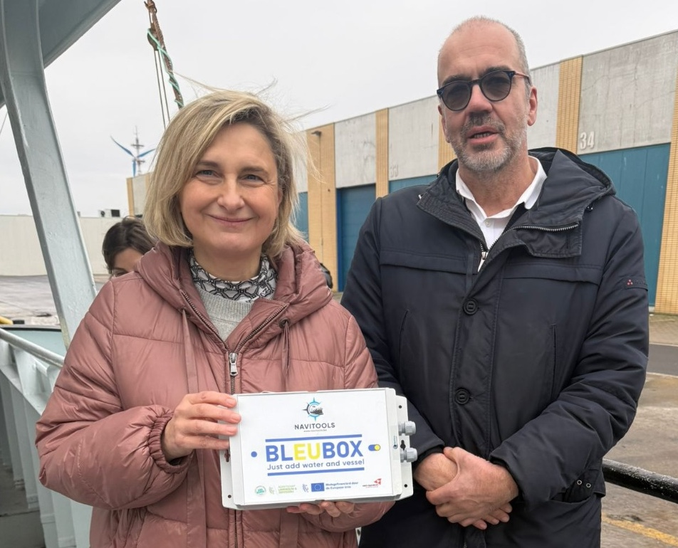
01
Purpose-built hardware
Purpose-built collection unit, hardened for working vessels. Dedicated processing, minimal maintenance, long service life.
European Union and Flanders.

One box on board. A complete data picture for your fleet, your science, and your sector.
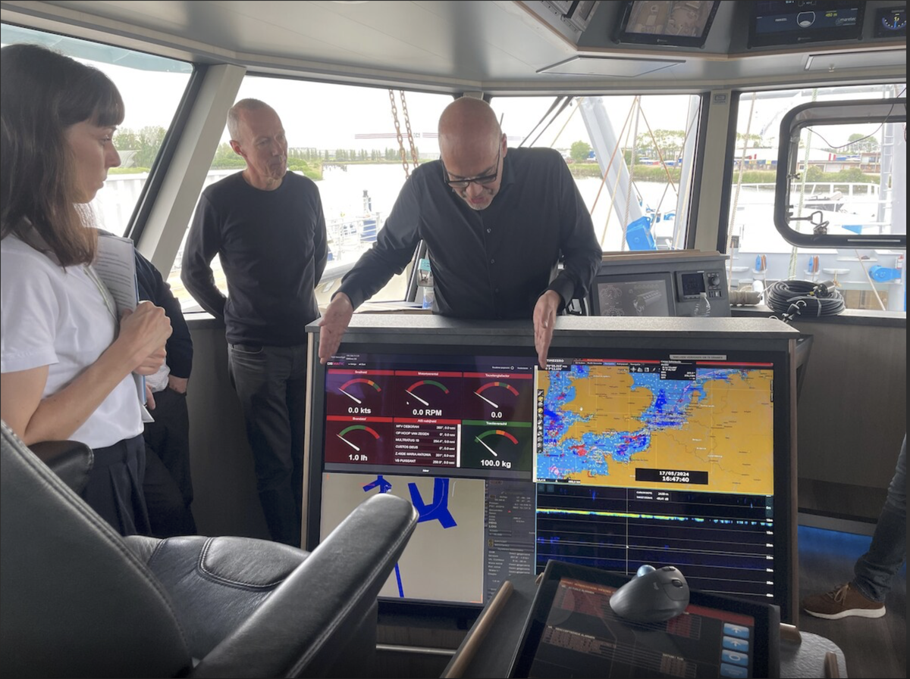
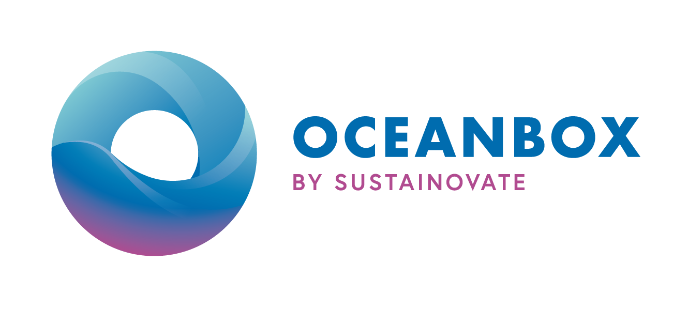
Data Processing Technology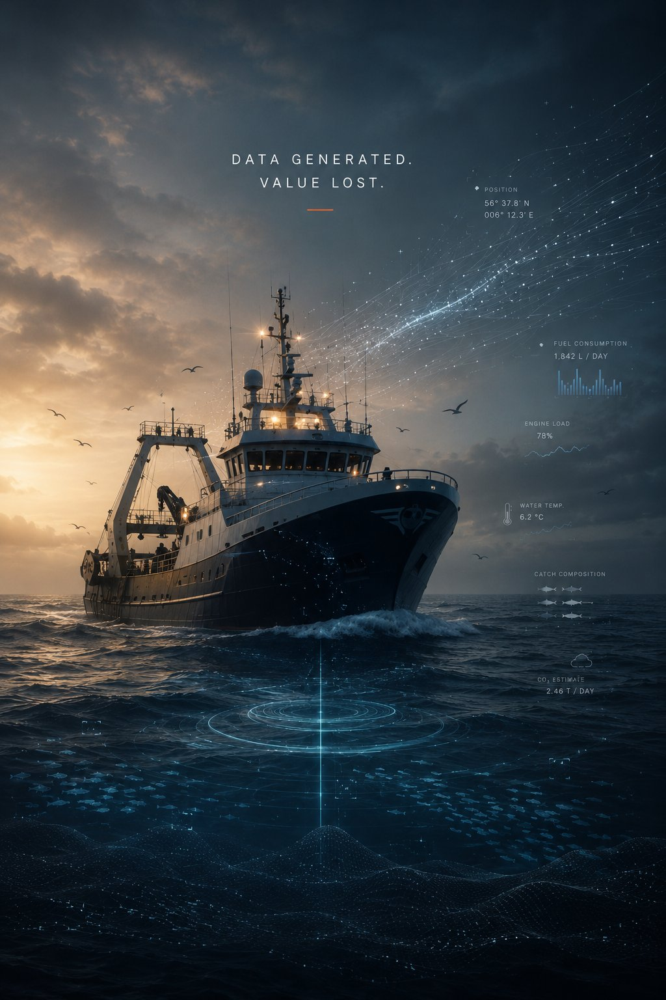
NaviTools was built to capture this missing data layer.

Full traceability is not a plan. It is already implemented on five vessels.
Click a vessel for deployment details.
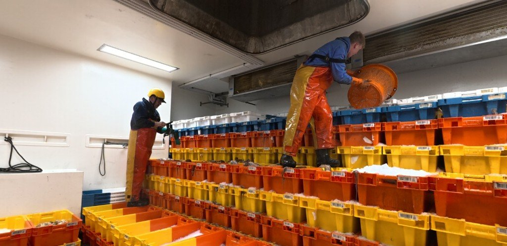
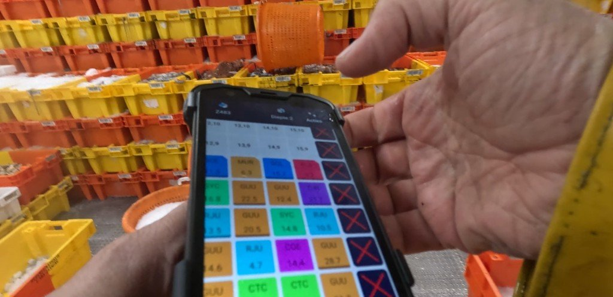
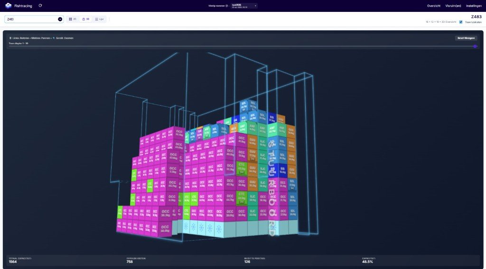
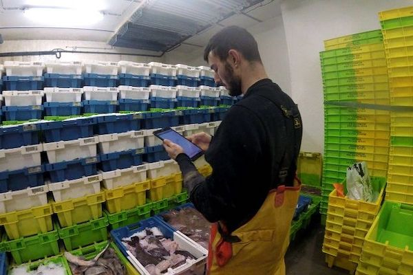

Purpose-built collection unit, hardened for working vessels. Dedicated processing, minimal maintenance, long service life.
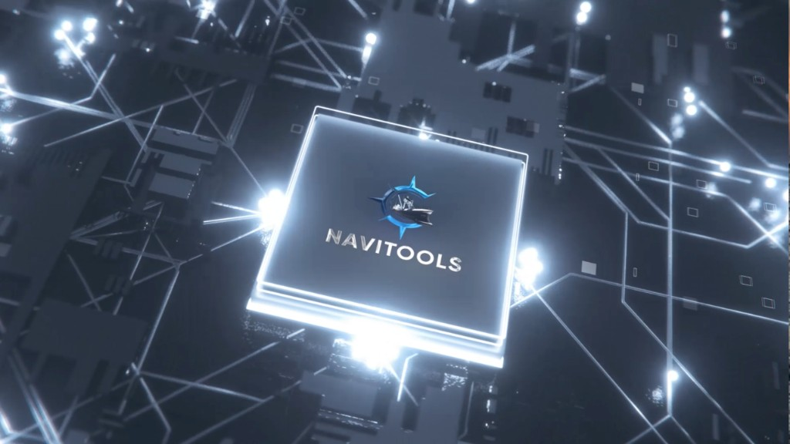
Data processing and storage on enterprise-grade cloud infrastructure — the same standards used by global research institutions and governments. Reliable, scalable, auditable.

Research modules — stock assessment, species distribution, environmental data pipelines — plug in as modular, open-source components. No black boxes.
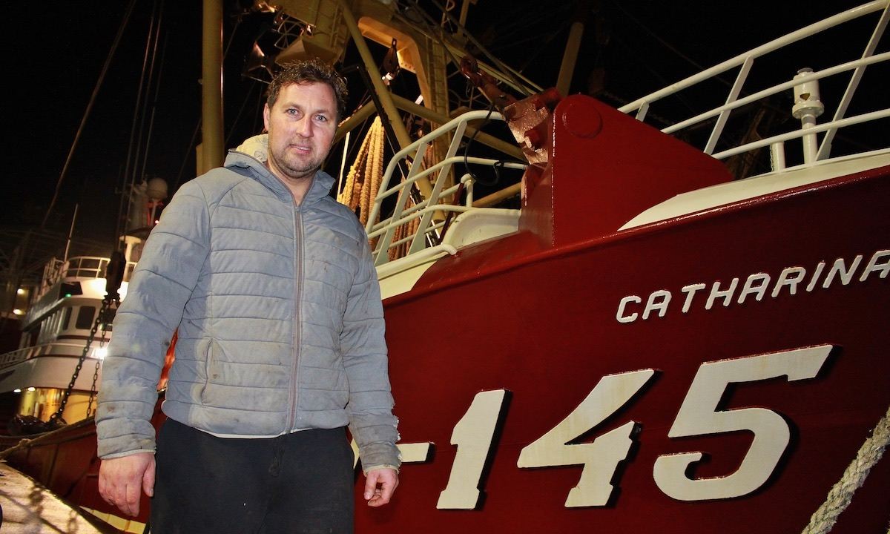
Conceived from the deck up, by a former commercial skipper. Practical first, data-rich second, complex only when necessary.

Vessel owners retain full ownership of their data. They decide who accesses it, on what terms, for which purpose.
AI agents handle the heavy work: crunching trip data, building dashboards, running predictive models that sharpen as more vessels contribute. On deck, the same agents make that data accessible in plain language — a skipper or fleet manager can ask a question and get an answer on their own phone or tablet. No new interface to learn — the data comes to them.
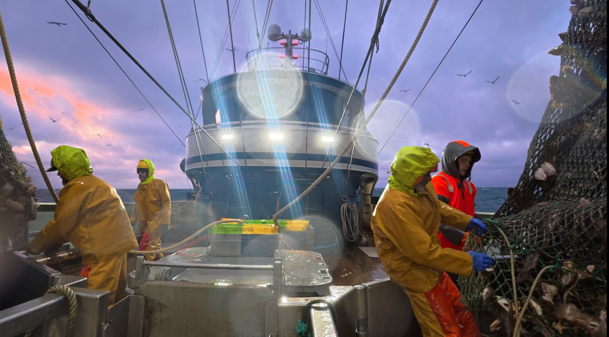
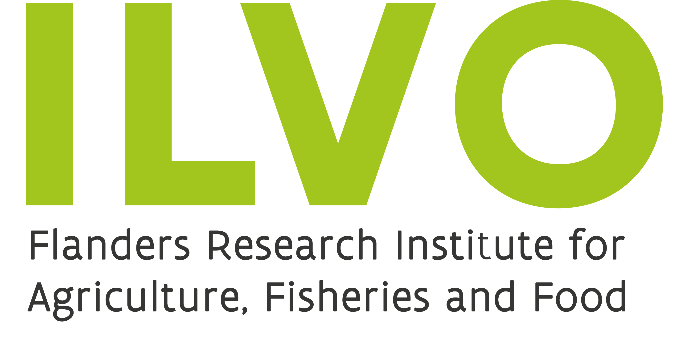
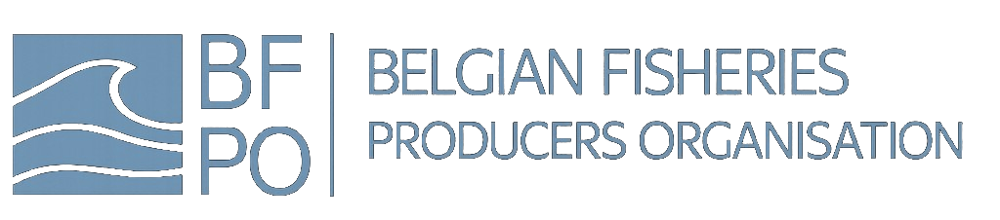
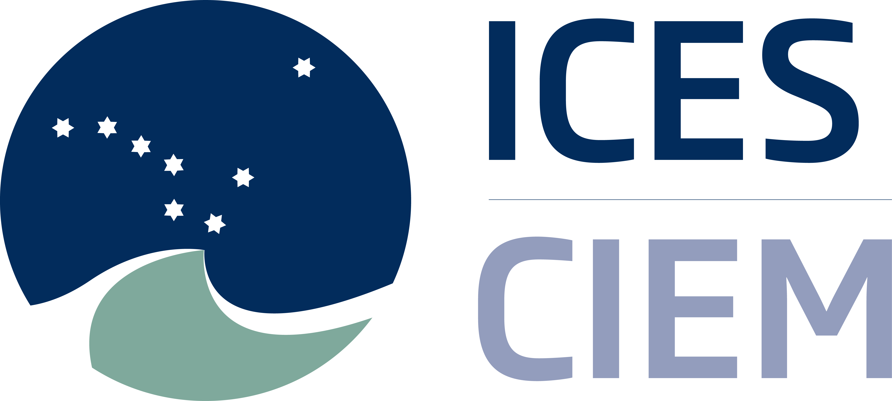

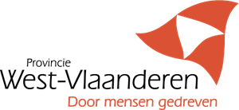
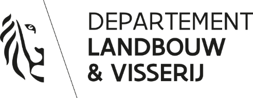
NaviTools is live on 70%+ of the active Belgian demersal fleet, with growing coverage in the Netherlands.
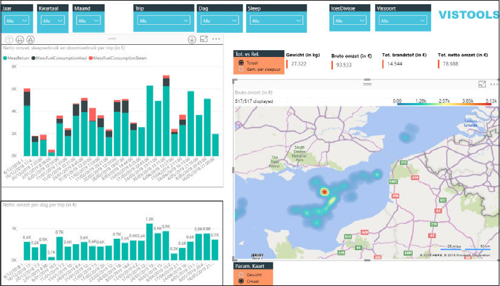
VIStools is the research and skipper-facing analytics platform built on the NaviTools BleuBox data concentrator. Automated sensor data from each trip feeds a live view of catch composition, fuel consumption, and revenue per haul — accessible on board and online.
Is this the Tech to build a Regenerative Fishery?
What Regenerative Fishing Could Actually Look Like
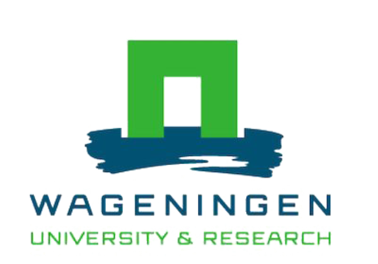
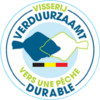
For institutional partners, governments, funders and international organisations. We typically respond within two business days.